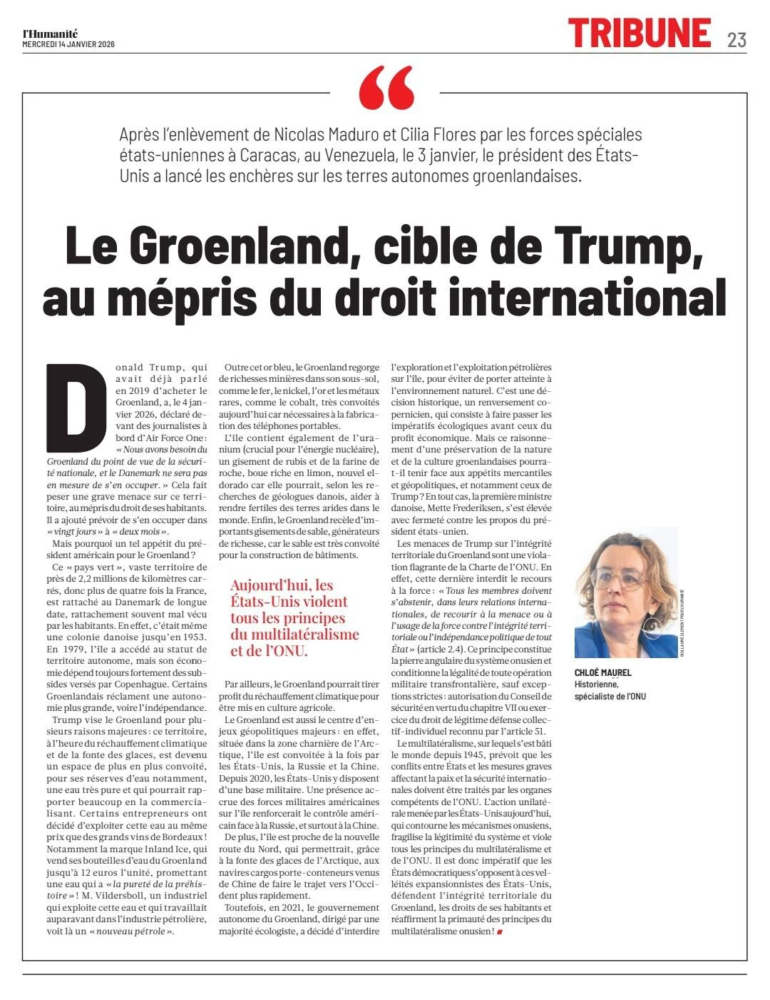
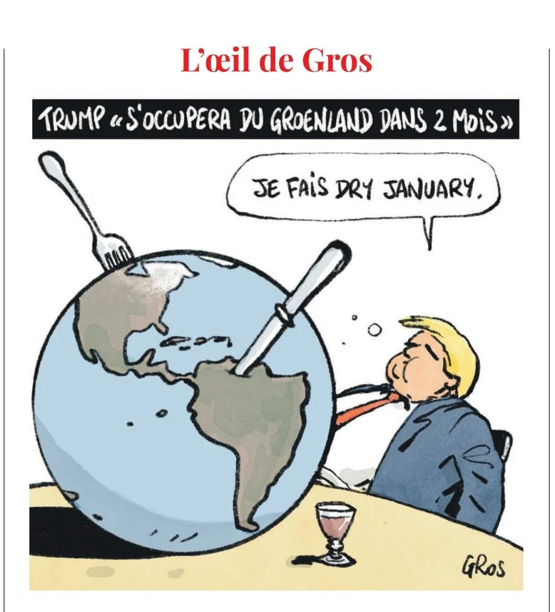

Tribune de L’Humanité
Le Groenland, cible de Trump. La tribune de Chloé Maurel
Date indiquée par Facebook · 14 janvier 2026
Repères éditoriaux
Dans L’Humanité du 14 janvier, l’historienne Chloé Maurel analyse les menaces américaines contre le Groenland. Elle relie les intérêts économiques et stratégiques en Arctique au respect de la Charte de l’ONU et aux droits des habitants.
Texte conservé avec la publication
TRUMP, le mépris du droit international
l'Humanité


Sources
Archive rouge · export Facebook · AR-0002-FB-00904
À lire aussi · Le Groenland à la une de L’Humanité du 23 janvier